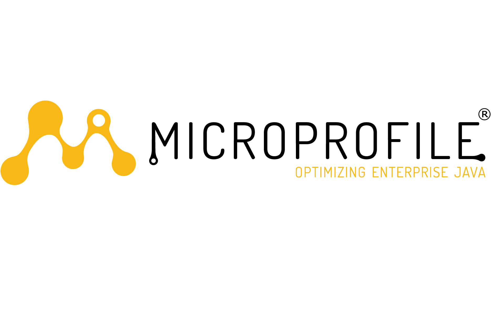
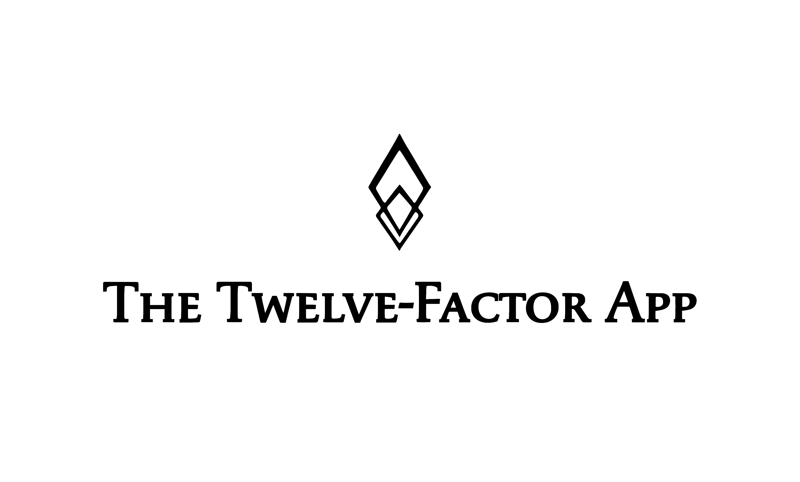

Motivation
Wege in die Cloud
Spring Native
Motivation
Java is still here
Java seit vielen Jahren eine der verbreitesten Programmiersprachen1

Spring hat sich über die letzten Jahrzehnte zum de-facto-Standard für die Enterprise-Entwicklung etabliert
Java im Betrieb
- In ganz klassicher Weise auf Applikationsservern
- Spring Boot bündelt Deploymentartefakte + Applikationsserver
Java im Betrieb
- In ganz klassicher Weise auf Applikationsservern
- Spring Boot bündelt Deploymentartefakte + Applikationsserver
Aber ...
- ... Anwendungen können monolithisch werden
- ... das Monitoring und die Skalierung kann aufwendig sein
Java im Betrieb
- In ganz klassicher Weise auf Applikationsservern
- Spring Boot bündelt Deploymentartefakte + Applikationsserver
Aber ...
- ... Anwendungen können monolithisch werden
- ... die Skalierung kann aufwendig sein
Und ...
- ... die Cloud macht einiges anders
Die Cloud und ihre Anforderungen
- Container und Kubernetes setzen auf Microservices
- Anwendungen müssen effizient mit Neustarts umgehen
- Ressourcen werden je nach Verbrauch abgerechnet
Java + Cloud = Challenge?
- Java wird klassischerweise Just-in-Time (JIT) kompiliert
- Speicherverbrauch ist in der Regel höher als bei Skriptsprachen wie Typescript
- Features wie Reflection erhöhen die Startup-Time
Und wie lösen wir das Problem?
Wege in die Cloud
Microservice-Standards für Java


Container First Frameworks
Quarkus
Micronaut
Spring, aber eben noch kleiner...
- FaaS-Ansatz
- Spring Cloud Functions
Coordinated Restore at Checkpoint (CRaC)
- Mechanismus um einen Snapshot seiner laufenden Java-Anwendung zu erzeugen
- Durch Wiederherstellung des Snapshots soll die Start-Up-Time eingespart werden
- Befindet sich im frühen experimentellen Stadium
Was macht diese Lösungen unattraktiv?
- Framework-Migration
- Umbau der Anwendung notwendig
- Nicht ausgereift genug
Spring Native
Native Images
- Extrem schnelle Startzeiten
- Minimaler Speicherverbrauch
- Kurze Antwortzeiten
Ahead of Time Compilation (AOT)
- Der Klassenpfad ist zum Zeitpunkt des Bauens fest definiert
- Die Anwendung kann zur Laufzeit nicht mehr verändert werden
AOT generiert:
- Java Source Code
- Bytecode
- GraalVM JSON Dateien, zur Laufzeitkonfiguration

Was bisher geschah....
Was bisher geschah....
Spring Native stand als experimentelles Feature zur Verfügung.
org.springframework.experimental
spring-native
0.12.0
Was bisher geschah....
Die Konfiguration von Spring Native war dementsprechend aufwendig.
Was bisher geschah...
Regelmäßige Änderungen und ein aufwendiges Setup waren für produktiven Einsatz quasi nicht benutzbar.
November 2022:
Release Spring 6 und Spring Boot 3
Spring Boot 3: Native Image Support
- Offizielle Unterstützung von nativen Images
- Integrierter Buildprozess
Demo

Performance
// TODO
Startzeit in Sekunden
Performance
// Arbeitsspeicher
Buildprozess
- Standard-Buildprozess ist komplett integriert
- Maven (und Gradle) Goals verfügbar
- Native Images können direkt in Docker Containern gebaut werden
Quellen
- Foto von Matthew Henry auf Unsplash
- Foto von Javier Allegue Barros auf Unsplash
- Foto von Sergey Shmidt auf Unsplash